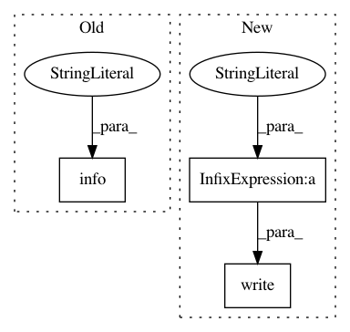

b70ad56f5c3a1f51a6c5e9143f212fcac23738f3,skmultiflow/evaluation/EvaluatePrequential.py,EvaluatePrequential,train_and_test,#EvaluatePrequential#Any#Any#,69
Before Change
logging.info("\nEvaluation time: %s s", str(round(end_time - init_time, 3)))
logging.info("Total instances: %s", str(self.global_sample_count))
logging.info("Global accuracy: %s", str(round(self.global_correct_predicts/self.global_sample_count, 3)))
logging.info("Global kappa statistic %s", str(round(self.global_kappa, 3)))
if self.show_plot:
self.visualizer.hold()
After Change
f.write("\n// " + self.stream.get_info())
if hasattr(self.classifier, "get_info"):
f.write("\n// " + self.classifier.get_info())
f.write("\n// " + self.get_info())
f.write("\n// SETUP END")
f.write("\nx_count,global_performance,partial_performance,sliding_window_kappa,true_label,prediction")
if (self.pretrain_size > 0):
In pattern: SUPERPATTERN
Frequency: 3
Non-data size: 3
Instances
Project Name: scikit-multiflow/scikit-multiflow
Commit Name: b70ad56f5c3a1f51a6c5e9143f212fcac23738f3
Time: 2017-06-21
Author: guilhermekmatsumoto@gmail.com
File Name: skmultiflow/evaluation/EvaluatePrequential.py
Class Name: EvaluatePrequential
Method Name: train_and_test
Project Name: tensorflow/tensorboard
Commit Name: a736f1b5cd976d81d9541aabcb66db16e13fd26b
Time: 2017-09-01
Author: jart@google.com
File Name: tensorboard/main.py
Class Name:
Method Name: run_simple_server
Project Name: tensorflow/tensorboard
Commit Name: f024f6b705db8c0cb467f9b51d5c166e76c1f184
Time: 2017-12-06
Author: nfelt@users.noreply.github.com
File Name: tensorboard/plugins/debugger/interactive_debugger_plugin.py
Class Name: InteractiveDebuggerPlugin
Method Name: listen